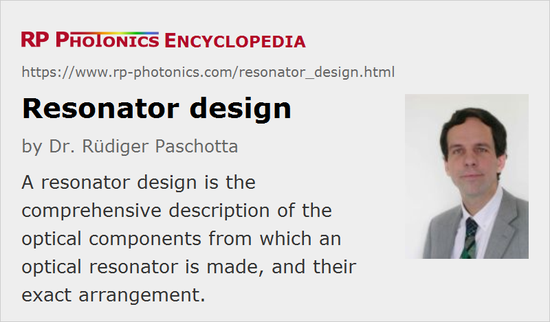

Resonator Design
Definition: the description of the optical components from which an optical resonator is made, and their exact arrangement
Alternative term: cavity design
German: Resonatordesign
Categories: optical resonators, methods
How to cite the article; suggest additional literature
Author: Dr. Rüdiger Paschotta
The term resonator design (or cavity design) is most often used in the context of laser resonators for solid-state bulk lasers, but sometimes also for simpler resonators, e.g. for use in high resolution spectrometers. The design of an optical resonator basically means to define the arrangement of optical elements (e.g. laser mirrors) including their exact distances, so that the resonator modes have the desired properties. The mechanical design can also be an important aspect.
In simple cases, the basic design of a resonator is clear from start (for example: a two mirror resonator), and one only needs to adjust certain design parameters such as mirror curvature radii or distances between elements. In other cases, one will also have to decide about the principal resonator architecture – for example:
- Should it be a linear or a ring resonator?
- Should the laser crystal be placed close to an end mirror, or better somewhere between two focusing mirrors?
- Where should a wavelength tuning element or a saturable absorber be placed?
- Is it helpful to insert a curved folding mirror somewhere?
It is not always possible to answer such questions in the beginning of a design process. One may start with a certain resonator architecture but have to change it later on when recognizing certain fundamental limitations.
Important Resonator Properties
The design goals for resonators, particularly for laser resonators, can include a large number of aspects which can affect various performance details:
- A frequently encountered requirement is that of suitable mode sizes in or at certain optical components such as the gain medium (in a laser resonator), a saturable absorber (in a mode-locked laser), or a mirror.
- In many cases, it is important to avoid an excessive sensitivity of mode sizes to mechanical tolerances (length deviations or misalignment), and also to thermal lensing effects (including optical aberrations). For a laser, this can help to achieve a good beam quality over a wide range of pump powers.
- The stability zones with respect to the dioptric power of the thermal lens in the gain medium should be as wide as possible, but this property is connected to the minimum mode size e.g. in the laser gain medium.
- The resonator should have an appropriate length, e.g. a short length for generating short pulses with Q switching or for easy single-frequency operation, or a certain length for a suitable pulse repetition rate of a mode-locked laser. In some cases, a resonator needs to have the potential to be operated with a variable resonator length, e.g. for obtaining a tunable pulse repetition rate.
- In many cases, the round-trip losses should be minimized, e.g. for a low threshold pump power and low laser noise.
- A minimum number of optical components is often desirable.
- The overall size may be optimized, also the mechanical stability, and the ease of manufacturing.
The importance of these criteria should not be underestimated. There are cases where very significant improvements of performance of a laser and also greatly reduced alignment sensitivity can be achieved with an optimized resonator.
The Role of Resonator Modes
Note that most of the important resonator properties as discussed above refer to properties of resonator modes. Therefore, a resonator design process is usually done in two distinct steps:
- First, one needs to identify which mode properties are essential for the performance, and which values they should have.
- Thereafter, one can try to find a resonator design having modes with those properties.
The first step should often be based on some laser physics calculations. For example, one may have to design a resonator for an appropriate ratio of optical intensity to the saturation intensity of the gain medium.
For the second step, one will often require some numerical resonator design software.
Without the concept of resonator modes, resonator properties and their optimization would be far more difficult to understand.
Example: Single-transverse Mode Laser
A simple example is that of an end-pumped continuous-wave solid-state laser, which is required to have a high (diffraction-limited) beam quality. Here, the mode radius in the laser crystal should approximately match the pump beam radius, because that leads to an optimized energy conversion efficiency. Also, that leads to the suppression of lasing on higher-order transverse modes, which then have a lower gain compared with the fundamental (Gaussian) modes because of their lower spatial overlap.
The pump beam radius and mode radius should usually be chosen such that with the intended pump power level the laser will operate several times above the laser threshold. For a four-level gain medium, that implies that the intracavity laser intensity should be a few times the saturation intensity of the laser gain. (For quasi-three-level gain media, the calculation is a bit more difficult.) A certain amount of pump beam quality will then be required for maintaining the appropriate pump beam radius throughout the crystal.
Note that the mode radii will generally depend on the strength of the thermal lens. Particularly for high-power lasers, it is thus necessary to estimate the strength (dioptric power) of the thermal lens, and to design the resonator such that it works well within a certain range of that value. For example, the mode radii within the laser crystal and at the laser output should not vary too much, and nowhere should the mode radius get small enough to lead to optical damage or other problems related to excessive optical intensities. That is typically achieved by designing the resonator such that for the expected dioptric power of the thermal lens one will operate well within a stability zone, i.e., not close to an edge of a stabilize zone, where mode radii can diverge or go towards zero.
The alignment sensitivity should also be checked. Note that resonator designs with similar mode radii in the laser crystal can differ very much in terms of alignment sensitivity, and that can make some designs very hard to work with in practice. Note that the alignment sensitivity diverges at one of the four edges of the two stability regions of a linear resonator.
The width of a stability zone with respect to the dioptric power of the thermal lens is inversely proportional to the minimum mode radius – which indicates problems for high-power lasers, requiring large modes. Also, the alignment sensitivity will then typically be higher. Therefore, one sometimes designs resonators for substantially smaller modes, such that stability ranges are much wider and the alignment is less sensitive, although when then sacrifices beam quality: the full pumped area in the laser crystal can then be covered only with some combination of transverse modes. (The resulting beam quality can then be estimated from the ratio of pumped area and fundamental resonator mode area.) The achieved power conversion efficiency of such a multimode laser is often somewhat higher than with a resonator enforcing single transverse mode of operation, essentially because the laser intensity profile can then more flexibly adjust itself to the available gain.
Additional Constraints in Pulsed Lasers
In an actively Q-switched laser, one requires some kind of optical modulator. The resonator design therefore needs to provide some space for that, and it should have an appropriate mode radius at that location, so that one will neither get clipping of the beam at the aperture of the modulator not too strong beam focusing, which may lead to damage.
Similarly, a passive Q-switch (a saturable absorber) must be operated with an appropriate beam radius, such that one obtains an appropriate degree of absorber saturation. Otherwise, the absorber may either be damaged or cause excessive power losses.
Similar considerations apply to passively mode-locked lasers. An additional aspect is that one might obtain Q-switching instabilities if the absorber saturation is too weak. Also note that stable single-transverse-mode operation is a vital condition for mode locking, making correct mode sizes particularly important. Another issue can be dispersion compensation, for which one may have to integrate a prism pair and/or some dispersive mirrors in the design.
The overall resonator length, determining the round-trip time for light in the resonator, is also an important figure in a pulsed laser. For a Q-switched laser, it has an important influence on the obtained pulse duration, while in case of mode locking it determines the pulse repetition rate.
Intracavity Frequency Doubling
In case of intracavity frequency doubling, the resonator must of course provide some space and appropriate beam radius for the nonlinear crystal, such that a reasonable amount of single-pass conversion (e.g. a few percent) is achieved. Besides, one needs to couple out the frequency-doubled light at a suitable location – preferably such that one obtains a single output beam while utilizing the nonlinear conversion in both directions. One typically chooses to do the output coupling at a folding mirror, not an end mirror.
Transverse Mode Frequencies
In some cases, the optical frequencies of transverse modes should also be taken into account. For example, this can be essential for a passive resonator used as a frequency filter, when perfect mode matching to the fundamental mode cannot be guaranteed. There are also cases where mode coupling to higher-order modes in a laser resonator must be avoided by ensuring that those modes, to which a substantial coupling is possible based on the spatial mode properties, have optical frequencies which substantially differ from those of the fundamental modes [5].
Typical Trade-offs in Resonator Design
It is often not possible to ideally satisfy all demands on a resonator design, because there are certain fundamental limitations or one does not have sufficiently many free parameters in a design. Therefore, the optimization of a resonator can involve various trade-offs:
- A particularly compact resonator design may not be ideal in terms of beam quality or alignment sensitivity.
- Operation in stability zone I can strongly reduce the alignment sensitivity, but this may require a longer resonator and/or smaller spot sizes on the resonator mirrors, which can cause problems e.g. in the case of Q-switched lasers.
- A high-power laser may be designed for diffraction-limited beam quality, but then have a lower tolerance for misalignment.
Therefore, successful optimization is possible only on the basis of a solid understanding of the specific requirements, the relevant physical effects, and the trade-offs involved.
The Design Problem
Whereas it is normally not very difficult to evaluate the mode properties of a given resonator, it can be much more challenging to find a resonator design which has the required mode properties – particularly in cases where multiple conditions have to be fulfilled simultaneously. Note also that any design change, e.g. aimed at improving one resonator property, may at the same time also affect all other properties. Therefore, the resonator design process can usually not work such that one solves different problems step by step. Generally, a laser design in process where one realizes various problems only step by step is prone to be time-consuming and inefficient.
Sometimes, certain design goals are not exactly known in advance, e.g. because the strength of the thermal lens is not exactly known yet. It can then be good to have a design which can be adjusted accordingly.
There are also cases where one may first need to design and construct a test resonator, which allows one to accurately measure the strength of the thermal lens, before implementing the actual laser resonator for optimal performance. A useful test resonator may e.g. have a well defined stability edge, where e.g. the mode radii rise rapidly (rather than gradually) when a certain dioptric power is reached.
In many cases, finding a good solution requires
- a deep understanding of resonator physics
- a flexible resonator design software with the option for numerical optimization with an arbitrarily defined figure of merit (see below)
- significant experience with different kinds of resonator designs and their performance (not just with the handling of some software)
A powerful numerical method for resonator design is to define a figure of merit, calculated as the sum of “penalties” for all non-ideal properties, and to minimize that with numerical techniques by varying resonator arm lengths and possibly mirror curvatures. Because the figure of merit often has a huge number of local extrema, a Monte-Carlo method is sometimes used for finding the global optimum or at least a good solution. Note that the procedure starts with some basic resonator structure, which may have to be varied if no good solution can be found.
Particularly challenging resonator design tasks arise in the context of mode-locked lasers, with combinations of various mode sizes, resonator length constraints, and other complications.
Suppliers
The RP Photonics Buyer's Guide contains 10 suppliers for resonator design software. Among them:
Questions and Comments from Users
Here you can submit questions and comments. As far as they get accepted by the author, they will appear above this paragraph together with the author’s answer. The author will decide on acceptance based on certain criteria. Essentially, the issue must be of sufficiently broad interest.
Please do not enter personal data here; we would otherwise delete it soon. (See also our privacy declaration.) If you wish to receive personal feedback or consultancy from the author, please contact him e.g. via e-mail.
By submitting the information, you give your consent to the potential publication of your inputs on our website according to our rules. (If you later retract your consent, we will delete those inputs.) As your inputs are first reviewed by the author, they may be published with some delay.
Bibliography
| [1] | D. Metcalf et al., “Laser resonators containing self-focusing elements”, Appl. Opt. 26 (21), 4508 (1987), doi:10.1364/AO.26.004508 |
| [2] | A. E. Siegman, “New developments in laser resonators”, Proc. SPIE 1224, 2 (1990), doi:10.1117/12.18425 |
| [3] | V. Magni et al., “Recent developments in laser resonator design”, Opt. Quantum Electron. 23, 1105 (1991), doi:10.1007/BF00619980 |
| [4] | G. Cerullo et al., “Resonators for Kerr-lens mode-locked femtosecond Ti:sapphire lasers”, Opt. Lett. 19 (11), 807 (1994), doi:10.1364/OL.19.000807 |
| [5] | R. Paschotta, “Beam quality deterioration of lasers caused by intracavity beam distortions”, Opt. Express 14 (13), 6069 (2006), doi:10.1364/OE.14.006069 |
| [6] | S. Yefet and A. Pe'er, “A review of cavity design for Kerr lens mode-locked solid-state lasers”, Appl. Sci. 3 (4), 694 (2013), doi:10.3390/app3040694 |
| [7] | For German readers: R. Paschotta, “Resonatordesign – unterschätztes Potenzial für bessere Laser”, http://www3.interscience.wiley.com/cgi-bin/fulltext/116313857/PDFSTART, Laser Technik Journal 4 (4), p. 50 (2007) |
| [8] | A. E. Siegman, Lasers, University Science Books, Mill Valley, CA (1986) |
| [9] | N. Hodgson and H. Weber, Laser Resonators and Beam Propagation, 2nd edn., Springer, Berlin (2005) |
See also: optical resonators, lasers, laser resonators, enhancement cavities, stability zones of optical resonators, alignment sensitivity of optical resonators, laser design, The Photonics Spotlight 2011-06-10
and other articles in the categories optical resonators, methods

This encyclopedia is authored by Dr. Rüdiger Paschotta, the founder and executive of RP Photonics Consulting GmbH. How about a tailored training course from this distinguished expert at your location? Contact RP Photonics to find out how his technical consulting services (e.g. product designs, problem solving, independent evaluations, training) and software could become very valuable for your business!
|  |
If you like this page, please share the link with your friends and colleagues, e.g. via social media:
These sharing buttons are implemented in a privacy-friendly way!